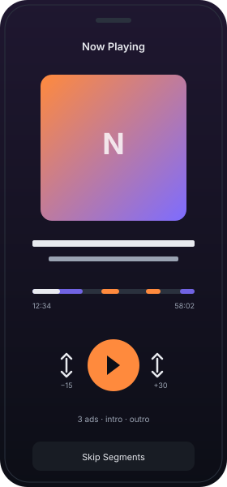
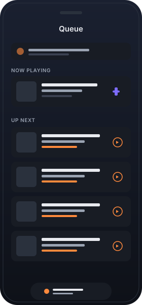
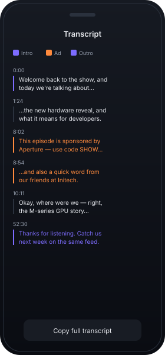
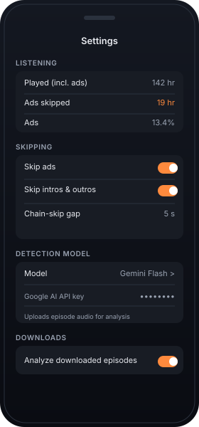

Auto-skip mid-roll ads
Detected ad segments are skipped the moment playback enters them. Listen continuously without thumbing the 30-second button.
Noadcast transcribes every episode on-device with Apple's SpeechAnalyzer and uses a cloud LLM to mark every ad, intro, and outro. Playback jumps right over them — including back-to-back sponsor reads — without you touching the screen.

Detected ad segments are skipped the moment playback enters them. Listen continuously without thumbing the 30-second button.
Recognises the show's theme music and outro credits as their own segment kind — marked indigo on the timeline so you know what's about to be skipped.
Two sponsor reads with only a breath between them? Noadcast peeks ahead and jumps the entire run in one seek.
Toggle ads, intros, and outros independently in Settings. Markers always render on the timeline and in the transcript — skipping is a separate choice.
Every line is tappable to seek. Ad / intro / outro lines are color-coded, with a separate "Skip Segments" view showing just the parts that would be skipped.
Up Next list with swipe-to-top, swipe-to-remove, group-by-podcast sorting, and auto-advance when an episode ends.
Auto-downloads new queued episodes over Wi-Fi (configurable) and runs transcription + ad detection in the background so they're ready when you press play.
Now Playing info, artwork, skip-forward / skip-back, and scrubbing all wired through MPNowPlayingInfoCenter.
Bring your existing subscriptions across in one go. Duplicates are skipped automatically.
Placeholders for now — drop real exports into website/screenshots/ with the same filenames and they'll replace these.



Search the iTunes directory or paste an RSS URL. Episode metadata is imported via FeedService; podcast artwork is fetched and cached locally so it survives offline.
Queued episodes auto-download in the background (Wi-Fi by default, configurable). Progress streams to the Downloads tab with bytes-completed and ETA.
Apple's SpeechAnalyzer (iOS 26) runs the audio through SpeechTranscriber in 30-minute streaming chunks. Transcripts stay on your device — nothing leaves until you ask for ad detection.
The full timestamped transcript is sent in a single structured-JSON request to your chosen cloud model. The response is parsed against a strict schema and written as AdMarker rows.
While you listen, a periodic time observer checks whether the current position is inside a skip region — and if it is, jumps to the end (and keeps walking forward to chain through adjacent ones).
@Model types for Podcast, Episode, AdMarker, QueueItem, AppSettings.Bring your own API key. Single-shot structured-JSON request per episode — no streaming, no batching gymnastics.
isInProgress, latestEpisodeAt, processingStateRaw fields so SwiftData predicates hit SQL instead of faulting relationships.Application Support/artwork/, plus an in-memory NSCache<NSURL, UIImage> for jank-free scrolling.